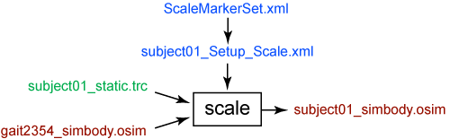

The Scale Tool alters the anthropometry of a model so that it matches a particular subject as closely as possible. Scaling is typically performed by comparing experimental marker data to virtual markers placed on a model. In addition to scaling a model, the Scale Tool can be used to adjust the locations of virtual markers so that they better match the experimental data.
The Scale Tool is accessed by selecting Tools → Scale Model… from the OpenSim main menu bar. Like all tools, the operations performed by the Scale Tool apply to the current model.
Overview
The figure below shows the required inputs and outputs for the Scale Tool. Each is described in more detail in the following sections.

Inputs and Outputs of the Scale Tool. Experimental data are shown in green; OpenSim files (.osim) are shown in red; settings files are shown in blue.
The file names are examples that can be found in the Models/Gait2354_Simbody directory installed with the OpenSim distribution. |
Settings Files
The subject01_Setup_Scale.xml file is the setup file for the Scale Tool. It contains settings, described in detail in How Scaling Works. The setup file can include the following information:
- ScaleTasks: Inverse kinematics tasks for the Scale Tool. In addition to scaling the model, the Scale Tool moves the virtual markers on the model so that their positions match the experimental marker locations. To do this, the Scale Tool must position the model so that it best matches the position of the subject. This requires an inverse kinematics problem to be solved. This file contains the inverse kinematics tasks describing which virtual and experimental markers should be matched up during the inverse kinematics phase. The file also contains marker weights, which are relative and determine how "well" the virtual markers track experimental markers (a larger weight will result in less error between the corresponding virtual and experimental marker positions).
- ScaleMeasurementSet: Measurement set for the Scale Tool. It contains pairs of experimental markers, the distance between which are used to scale the generic musculoskeletal model.
- ScaleScaleSet Scale set for the Scale Tool. It contains a set of manual scale factors to be applied to the generic musculoskeletal model.
As of 3.0.1 these settings are contained in a single file. If you had old setups with multiple files, they will be merged upon Open/Save of settings in the Scale Tool. |
ScaleMarkerSet.xml: Marker set for the Scale Tool. It contains the set of virtual markers that are placed on the body segments of the model.
Inputs
Two data files are required by the Scale Tool:
subject01_static.trc: Experimental marker trajectories for a static trial. A static trial is usually several seconds of data with the subject posed in a known static position. A segment of a regular motion file can be used as a static trial if desired, but this is not typically done. The static pose should include the subject wearing the full marker set. The marker trajectories are specified in the global frame. You can find more information about collecting and preparing motion data in the section on Preparing Your Data.
gait2354_simbody.osim: OpenSim musculoskeletal model. This generic model will be scaled to match the anthropometry of your subject.
You can also provide an additional, optional file:
subject01_static.mot: Experimental generalized coordinate values (joint angles) for a trial obtained from alternative motion capture devices or other specialized algorithms. You can specify coordinate weights in the Tasks file, if joint angles are known a priori. Coordinate weights are also relative and determine how "well" a joint angle will track the specified angle.
Outputs
The Scale Tool generates a single file:
subject01_simbody.osim: OpenSim musculoskeletal model scaled to the dimensions of the subject.
Best Practices and Troubleshooting
Data Collection and Other Preparation:
- When collecting data, take pictures of your subjects in the static pose. These pictures are valuable for evaluating the results of the Scale Tool.
- Measure subject specifics, like height, mass, body segment lengths, mass distribution (if DXA is available), and strength (if a Biodex is available). You can use this data, along with marker positions, to best match the generic model to a specific subject.
- Have your subjects perform movements to calculate functional joint centers at the hip, knee, ankle, and/or shoulders, and append the joint centers to your static trial data (see Associating Data with a Motion).
- These are just a few tips. Also review our full guide to Collecting Experimental Data.
Scale Settings:
- Rely on markers that correspond to anatomical landmarks and functional joint centers (FJC) to position and scale the generic model.
- See How to Use the Scale Tool for information about defining the measurement set for scaling and setting weights when positioning the model in the static pose.
- Some segments, like the pelvis and torso, are often best scaled non-uniformly. For example, see the torso scale settings in the section on the Scale Factors Pane in How to Use the Scale Tool.
- Review How Scaling Works for more information about Scale Settings.
Evaluating your Results:
- Scaling a model is an iterative process. Use the "preview static pose" option in the GUI. See the section on "Previewing Scale" in the How to Use the Scale Tool section for more information. After running preview, perform steps 2 to 5 described below.
- Check the "Messages" window, which has information about the results of scaling, including the overal RMS marker error and the maximum marker error.
- In general, maximum marker errors for bony landmarks should be less than 2 cm.
- RMS error should typically be less than 1 cm.
- Pay close attention to errors in the bony landmark and FJC markers when assessing the quality of your scaling results.
- Visualize the scaled model's anatomical marker positions relative to the corresponding experimental markers to see how well the model "fits" the data. Use the pictures you took to assess the results, comparing the joint angles in the "Coordinates" window to the angles you observe in the pictures.
- Do the hip, knee, and ankle angles after scaling match what you observe in the picture?
- Are there any large mismatches between experimental and model markers? Can these mismatches be explained by examining the pictures you took?
- If pictures aren't available, use what you know about a typical static pose capture. For example, the ankle angle is generally less than 5º and hip flexion angle is less than 10º.
- Again, pay close attention to errors in the landmark and FJC markers when assessing the quality of your scaling results.
- After examining the "Messages" window and performing a visual comparison, adjust the virtual markers and marker weightings to improve your results.
- Again, avoid adjusting the positions of the landmark and FJC virtual markers to match the experimental markers.
- Once you've adjusted the virtual marker positions and the scale settings, preview the new static pose. Reassess your results using steps 2 to 4 above. Once you are happy with your results, hit "Run" to generate a scaled model and adjust the virtual markers on the model to match all of the experimental markers.
Troubleshooting Tips:
- It is common to iterate through Scale and Inverse Kinematics to fine-tune segment dimensions and marker positions that yield low marker errors for the task of interest.
- Use coordinate tasks (Static Pose Weights) to set joint angles for troublesome joints that are very sensitive to how the markers are placed (commonly the ankle joint and lumbar joint). For example, if it is known that the foot is flat, an ankle angle can be provided and then the markers can be adjusted in order to match the known pose.
- If using coordinates from a motion capture system, make sure that the joint/coordinate definitions match—otherwise, you may cause more harm than good.
- The model has a built-in assumption that the global Y-axis is up. If your data doesn't fit this assumption, then consider transforming your data. You can use Previewing Motion Capture (Mocap) Data to determine the proper transform to apply.
Video Tutorials
Setting up the scale tool:
Evaluating your results:
{kind=link}
{kind=link}
{kind=link}